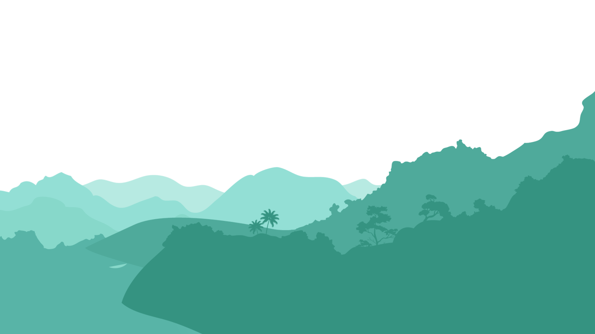
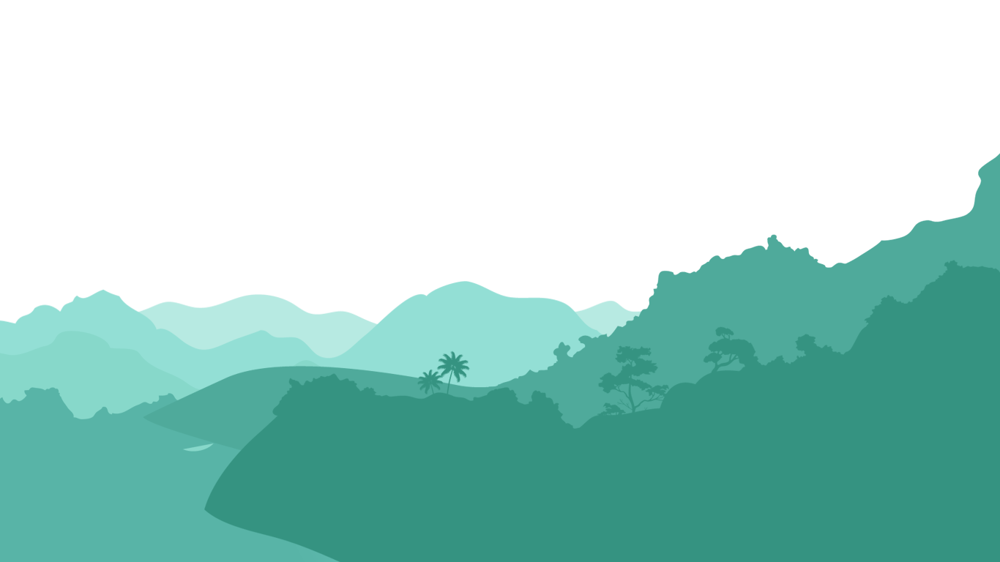
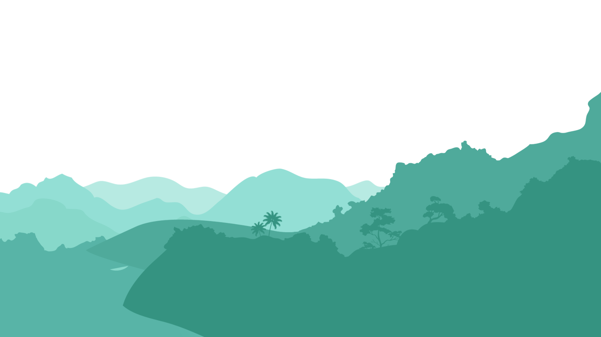
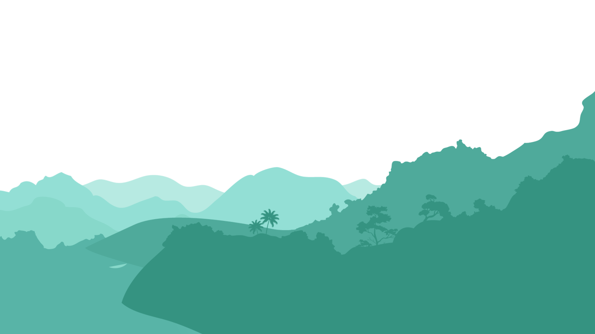

 

My name is Christopher Jhonathan Koolman, I am 20 years old doing media and design at Fontys. I like painting and going to out. I choose media because I enjoy making the websites, I find it fun. I live in Breda. I come from Aruba there I got my havo diploma.My mom is from Colombia And my dad s from Aruba. so I'm have spanish aswell. After I finished my havo I came here to do ICT at Fontys. I choose Fontys because it was the one that I got the most information about and seemed the most interesting.In my free time I like to go to the gym and play sports and also going out and explore. I find it really fun going exploring different paces in europe or even in the Netherlands. At Aruba I used to play a lot of sport but the sport that I did the most was volleyball I love playing it. Also In my free time I enjoy doing research about how to make websties and find different designs for a website.